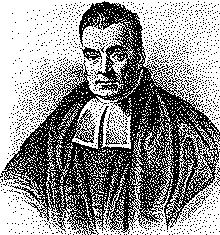

| годы жизни | 1701–1761 |
| страна | Англия · Танбридж-Уэллс |
| область | теория вероятностей · теология |
| главное | теорема Байеса · обратная вероятность (посм., 1763) |
| характер | при жизни не напечатал о вероятности ни строчки |
Пастор, чью главную работу нашли после смерти.
одна формула, перевернувшая направление вывода.
Прижизненно Томас Байес не напечатал по вероятности ни строчки. Пресвитерианский пастор из Танбридж-Уэллса, он писал о богословии и защищал ньютоновы флюксии от нападок Беркли. Формулу, что носит его имя, нашли в бумагах после смерти: друг, Ричард Прайс, разобрал наследие и в 1763 году отправил работу в Королевское общество.
Вопрос, занимавший Байеса, был перевёрнут к привычному. Не «какова вероятность исхода при известной причине», а обратный: увидев исход, что теперь думать о причине1. Как от следствия вернуться к тому, что его породило.
«Байесовский вывод — это арифметика того, как менять мнение под грузом фактов.» — современная формулировка
Ответ — правило пересчёта. Есть априорная догадка, до всяких данных. Приходит наблюдение. Байес показывает, во что догадка обращается после: апостериорное пропорционально правдоподобию, помноженному на априорное. Веру не отбрасывают и не держат нетронутой — её сдвигают ровно на вес новой улики.
Два века теорему держали за приём для узких задач. XX век сделал её мировоззрением: там, где данных мало, а решать надо, байесовский пересчёт стал способом честно жить с неопределённостью — от диагностики до машинного вывода. Пастор, молчавший при жизни, задал грамматику того, как разум учится на опыте.